北海道
山梨県東根さくらんぼ
農林水産物等の情報と生産地
| 登録番号 | 30 |
|---|---|
| 名称 | 東根さくらんぼ、HIGASHINE CHERRY |
| 分類 | 果物 |
| 登録日 | 2017/10/20 |
| 生産地 | 山形県 東根市及び隣接市町の一部 |
|---|---|
| 連絡先 | 果樹王国ひがしね6次産業化推進協議会 山形県東根市中央一丁目1番1号 https://www.higashine-cherry.jp/ |
紹介ビデオ
※提供元：果樹王国ひがしね6次産業化推進協議会